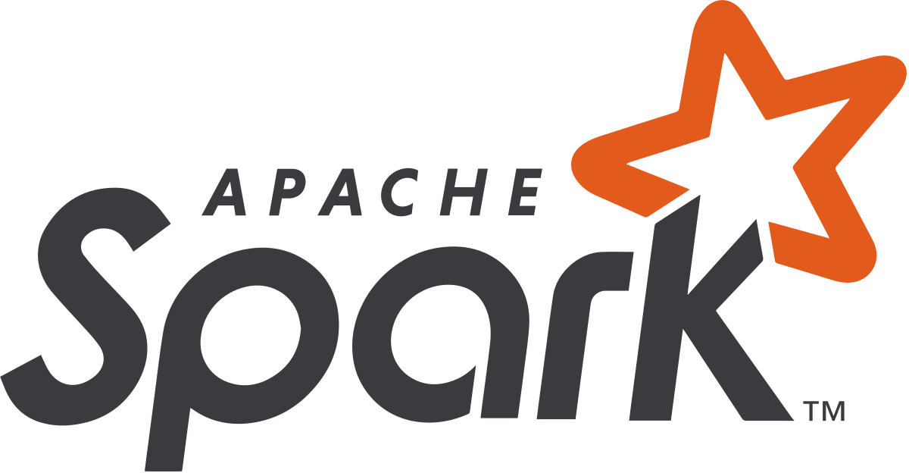
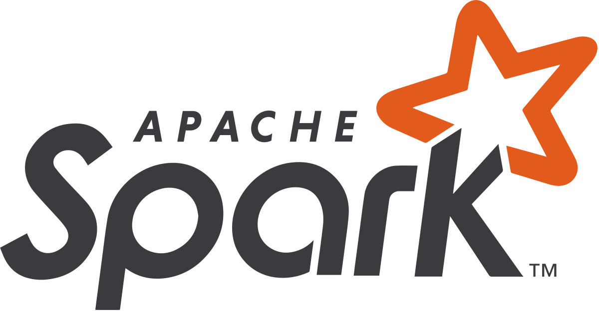

Kunal Ghogare
Data Analyst | Business Intelligence | Machine Learning
I specialize in data analytics, engineering, and visualization to drive business decisions. With experience in SQL, Python, and cloud platforms, I turn raw data into actionable insights.
I have built ETL pipelines, machine learning models, and interactive dashboards for organizations looking to optimize their operations and make data-driven decisions.

What I Do
Data Engineering
ETL pipelines & databases.
Data Visualization
Tableau & Power BI.
Machine Learning
Python & R models.
Cloud Computing
AWS, Azure, GCP.
Python & SQL
Data processing & analysis.
Big Data
Hadoop, Snowflake.
Automation
Apache Airflow & Kafka.
Business Analytics
Data-driven insights.
Education & Experience
Master of Science in Information Systems
California State University, Long Beach
Expected - May 2025
Courses: Business Data Analysis, Deep Learning, Big Data Management, Artificial Intelligence.
Bachelor of Engineering in Information Technology
Pune University
Aug 2017 - May 2021
Built strong foundations in databases, software engineering, and AI technologies.
Associate Data Engineer
Simplify Healthcare Ltd
Dec 2021 – Apr 2023
Designed and implemented scalable ETL pipelines to handle large volumes of healthcare data, improving processing efficiency by 40%. Developed automated data validation scripts, reducing manual workload significantly. Optimized SQL Server metadata and integrated Azure Data Factory, Python, and SQL for seamless data transformations.
Data Analyst Intern
The Mahua Store
Jun 2021 – Nov 2021
Built interactive Power BI dashboards that provided insights into sales trends, customer behavior, and operational performance. Performed SQL-based data extraction to analyze key performance indicators and drive marketing strategies. Optimized customer journey analytics, leading to a 15% increase in conversion rates.
Data Analyst Intern
National Education Foundation
Mar 2019 – Jan 2020
Led data-driven performance tracking for national-level educational events and competitions. Built predictive models using R & Python to optimize resource allocation, improving event success rates by 25%. Designed regression-based analytics models that enhanced strategic decision-making and improved reporting accuracy.
Featured Projects
Multiclass Image Classification
Built a deep learning model (EfficientNetB0) for sports image classification, achieving 98.2% accuracy.
Technologies: Python, TensorFlow, OpenCV, Flask
View ProjectMediMatch – AI
Developed an AI-driven platform for hospital resource optimization and patient symptom analysis.
Technologies: Python, SQL, Power BI, Tableau
View ProjectCustomer Churn Prediction & Dashboard
Built a predictive ML model to classify high-risk customers and integrated insights into Power BI.
Technologies: Python, Scikit-learn, Power BI, Kafka
View ProjectSales Forecasting Model
Developed a time-series forecasting model to optimize inventory and predict sales demand trends.
Technologies: Python, ARIMA, Tableau, AWS
View Project


 
